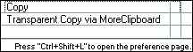

More Clipboard quick guide
- About
- Installation
- Setup
- Usage
More Clipboard plugin for Eclipse.
More Clipboard keeps track of the latest entries copied/cut into clipboard buffer and allows quick pasting from the popup list by pressing a hotkey. Inspired by Multi Clipboard plugin for Eclipse and Visual Assist for MS VS.
It's simple.
- Add a link to the update site (http://moreclipboard.sourceforge.net/updates) to the Eclipse Update Site manager.
Note: If you have previously installed More Clipboard v1.0.1 you will have to manually delete the ECLIPSE_ROOT/plugins/MoreClipboard_1.0.1.jar. Sorry for inconvenience.
- Or just download the lates moreclipboard_X.Y.Z.jar file into your Eclipse /plugins folder.
To check if the plugin is installed and working open Window/Show View/Other.. dialog; there should be a MoreClipboard folder with a MoreClipboard Contents view.
 There are some quick settings needed to be done to make MoreClipboard integrate to the system.
There are some quick settings needed to be done to make MoreClipboard integrate to the system.
At the moment the plugin registers same key bindings as a regular Cut and Copy commands (at least under Windows). So pressing Ctrl+C after the plugin installation would result in bindings conflict and a popup would appear.

So, in the Window/Preferences/General/Keys there are 4 bindings needed to be changed.

You should Unbind Ctrl+C and Ctrl+Insert from Copy command and Bind this key combinations to Transparent Copy via MultiClipboard.

And same should be done for Cutcommand: Ctrl+X and Shift+Delete key combinations are to be bind to Transparent Cut via MultiClipboard.

That's all.
After the proper setup the normal behavior of copy-paste is not changed, but the Ctrl+Shift+V combination (Paste from MoreClipboard) now provide ability to paste previously copied text:

You may also use combinations Alt+V+1 .. Alt+V+9 to paste items from MoreClipboard by index.
That it all. The contents of the MoreClipboard plugin could be seen at Window/Show View/Other../MoreClipboard/MoreClipboard Contents.